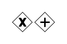
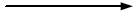

Object Event Modeling and Simulation of Manufacturing Systems
This tutorial article, which extends a tutorial paper presented at the Summer Simulation Conference 2019, is based on material from the tutorial Information and Process Modeling for Simulation – Part I: Objects and Events by Gerd Wagner and the Open Access book Beyond Lean: Simulation in Practice by Charles R. Standridge.
Copyright © 2019 G. Wagner (CC BY-NC)
Published 2019-07-22
Abstract
This tutorial shows how to use UML Class Diagrams and Event-Graph-based DPMN Process Diagrams for Object Event Modeling at all three levels of model-driven simulation engineering: for making conceptual simulation models, for making platform-independent simulation design models, and for making platform-specific, executable simulation models. UML Class Diagrams allow defining the types of objects, events and activities, thus creating a foundation for DPMN Process Diagrams. The proposed modeling approach is presented by showing how to model simple types of manufacturing systems: single workstations, workstations in a series, and job shops.
This tutorial is also available in the following formats: PDF
Table of Contents
- List of Figures
- List of Tables
- 1. Introduction
- 2. Single Workstation Systems
- 3. Serial Manufacturing Systems
- 4. Job Shops
- A. Simulation with OESjs
- A.1. Implementing Design Model 1.1
- A.2. Implementing Design Model 1.2
- A.3. Implementing Design Model 1.3
- A.4. Implementing Design Model 2.1
- A.5. Implementing Design Model 2.2
- A.6. Implementing Design Model 2.3
- A.7. Implementing Design Model 2.4
- A.8. Implementing Design Model 8
- A.9. Implementing Design Model 9
- B. Simulation with AnyLogic
- B.1. Implementing Design Model 1.1
- B.2. Implementing Design Model 1.2
- B.3. Implementing Design Model 1.3
- B.4. Implementing Design Model 2.1
- B.5. Implementing Design Model 2.2
- B.6. Implementing Design Model 2.3
- B.7. Implementing Design Model 2.4
- B.8. Implementing Design Model 8
- B.9. Implementing Design Model 9
- Bibliography
- Index
List of Figures
- 1-1. From conceptualization via design to implementation
- 2-1. A workstation with an input buffer for waiting parts.
- 2-2. A conceptual information model of a single workstation system.
- 2-3. A conceptual process model of a single workstation system.
- 2-4. A conceptual information model of object, event and activity types.
- 2-5. A conceptual process model based on events and activities.
- 2-6. Information design model 1.1 does neither consider individual parts nor processing start events.
- 2-7. Process design model 1.1 based on the information design model 1.1 shown above.
- 2-8. An information design model that does not consider individual parts.
- 2-9. A process design model based on the previous class diagram.
- 2-10. An information design model with a waitingParts input buffer.
- 2-11. A process design model with a waitingParts input buffer.
- 2-12. An information design model with a Processing activity type.
- 2-13. A process design model with a Processing activity.
- 3-1. An information design model for a series of two workstations.
- 3-2. An attempt of a process design model for a series of two workstations.
- 3-3. A generic information design model for any series of workstations.
- 3-4. A generic process design model for any series of workstations.
- 3-5. A generic information design model for a series of workstations with blocking.
- 3-6. A generic process design model for a series of workstations with blocking.
- 4-1. An information design model for a job shop with two workstations.
- 4-2. A process design model for a job shop with two workstations.
- A-1. Information design model 1.1.
- A-2. Process design model 1.1.
- B-1. Information design model 1.1.
- B-2. Process design model 1.1.
- B-3. The Main Agent window showing the first AnyLogic implementation of design model 1.1.
List of Tables
Chapter 1. Introduction
Due to their expressiveness and wide adoption as modeling standards, the Class Diagrams of the Unified Modeling Language (UML) and the Process Diagrams of the Business Process Modeling Notation (BPMN) are the most appropriate choices as information and process modeling languages for a model-based simulation engineering approach. However, since they have not been designed for this purpose, we may have to restrict, modify and extend them in a suitable way.
The Event Graph (EG) diagrams of Schruben (1983) allow defining computationally complete process design models for event-based simulation, which can be viewed as the most fundamental Discrete Event Simulation (DES) paradigm. In these diagrams, circles represent event types, and arrows between two event type circles A and B represent event scheduling with a future events list in the sense that an occurrence of an event of type A in a simulation run causes the simulator to schedule a future event of type B. Wagner (2018a+b) has extended Event Graphs by adding elements from BPMN, resulting in the Discrete Event Process Modeling Notation (DPMN).
Wagner (2018b) has proposed Object Event Modeling and Simulation (OEM&S) as a new model-based paradigm for DES combining Object-Oriented (OO) Modeling with the event scheduling paradigm of Event Graphs. In the OEM paradigm, the relevant object types and event types are described in an information model, which is the basis for making a process model. A modeling approach that follows the OEM paradigm is called an OEM approach. Such an approach needs to choose, or define, an information modeling language and a process modeling language.
We propose an OEM approach based on UML Class Diagrams for conceptual information modeling and information design modeling, as well as BPMN Process Diagrams for conceptual process modeling and DPMN Process Diagrams for process design modeling. In the proposed approach, object types and event types are modeled as special categories of classes in a UML Class Diagram. Random variables are modeled as a special category of class-level operations constrained to comply with a specific probability distribution such that they can be implemented as static methods of a class. Queues are not modeled as objects, but rather as ordered association ends, which can be implemented as collection-valued reference properties. Finally, event rules, which include event routines, are modeled both as BPMN/DPMN process diagrams and in pseudo-code such that they can be implemented in the form of special onEvent methods of event classes.
An OEM approach results in a simulation design model that has a well-defined operational semantics, as shown in (Wagner, 2017a). Such a model can, in principle, be implemented with any object-oriented (OO) simulation technology. However, a straightforward implementation can only be expected from a technology that implements the OEM&S paradigm, such as the OES JavaScript (OESjs) framework presented in (Wagner, 2017b).
The examples discussed in this tutorial, and their descriptions, are adopted from the excellent Open Access book Beyond Lean: Simulation in Practice by Standridge (2013).
1.1. Model-Driven Engineering
Model-Driven Engineering (MDE), also called model-driven development, is a well-established paradigm in software engineering. Since simulation engineering can be viewed as a special case of software engineering, it is natural to apply the ideas of MDE also to simulation engineering.
In MDE, there is a distinction between three kinds of models as engineering artifacts created in the analysis, design and implementation phases of a development project:
- domain models (also called conceptual models), which are solution-independent,
- design models, which represent platform-independent solution designs,
- implementation models, which are platform-specific.
Domain models are solution-independent descriptions of a problem domain produced in the analysis phase. A domain model may include both descriptions of the domain's state structure (in conceptual information models) and descriptions of its processes (in conceptual process models). They are solution-independent, or computation-independent, in the sense that they are not concerned with making any system design choices or with other computational issues. Rather, they focus on the perspective and language of the subject matter experts for the domain under consideration.
In the design phase, first a platform-independent design model, as a general computational solution, is developed on the basis of the domain model. The same domain model can potentially be used to produce a number of (even radically) different design models. Then, by taking into consideration a number of implementation issues ranging from architectural styles, nonfunctional quality criteria to be maximized (e.g., performance, adaptability) and target technology platforms, one or more platform-specific implementation models are derived from the design model. These one-to-many relationships between conceptual models, design models and implementation models are illustrated in Figure 1-1.
A model does not consist of just one model diagram including all viewpoints or aspects of the system to be developed. Rather it consists of a set of models, one (or more) for each viewpoint. The two most important viewpoints, crosscutting all three modeling levels: domain, design and implementation, are
- information modeling, which is concerned with the state structure of the domain, design or implementation;
- process modeling, which is concerned with the dynamics of the domain, design or implementation.
1.2. Information Modeling with UML Class Diagrams
Conceptual information modeling is mainly concerned with describing the relevant entity types of a real-world domain and the relationships between them, while information design and implementation modeling are concerned with describing the logical (or platform-independent) and platform-specific data structures (in the form of classes) for designing and implementing a software system or simulation. The most important kinds of relationships between entity types to be described in an information model are associations and subtype/supertype relationships, which are called ‘generalizations’ in UML.
In UML Class Diagrams, an entity type is described with a name, and possibly with a list of properties and operations (called methods when implemented), in the form of a class rectangle with one, two or three compartments, depending on the presence of properties and operations. Integrity constraints, which are conditions that must be satisfied by the instances of a type, can be expressed in special ways when defining properties or they can be explicitly attached to an entity type in the form of an invariant box.
An association between two entity types is expressed as a connection line between the two class rectangles representing the entity types. The connection line is annotated with multiplicity expressions at both ends. A multiplicity expression has the form m..n where m is a non-negative natural number denoting the minimum cardinality, and n is a positive natural number (or the special symbol * standing for unbounded) denoting the maximum cardinality, of the sets of associated entities. Typically, a multiplicity expression states an integrity constraint. For instance, the multiplicity expression 1..3 means that there are at least 1 and at most 3 associated entities. However, the special multiplicity expression 0..* (also expressed as *) means that there is no constraint since the minimum cardinality is zero and the maximum cardinality is unbounded.
A good overview of the most recent version of UML (UML 2.5) is provided by www.uml-diagrams.org/uml-25-diagrams.html.
1.3. Process Modeling with BPMN and DPMN
The Business Process Modeling Notation (BPMN) is an activity-based graphical modeling language for defining business processes following the flow-chart metaphor. In 2011, the Object Management Group has released version 2.0 of BPMN with an optional execution semantics based on Petri-net-style token flows.
The most important elements of a BPMN process model are listed in .
| Name of element | Meaning | Visual symbol(s) |
|---|---|---|
Event |
|  |
Activity |
|  |
Gateway | A Gateway is a node for branching or merging control flows. A Gateway with an "X" symbol denotes an Exclusive OR-Split for conditional branching, if there are 2 or more output flows, or an Exclusive OR-Join, if there are 2 or more input flows. A Gateway with a plus symbol denotes an AND-Split for parallel branching, if there are 2 or more output flows, or an AND-Join, if there are 2 or more input flows. A Gateway can have both input and output flows. |  |
Sequence Flow | An arrow expressing the temporal order of Events, Activities, and Gateways. A Conditional Sequence Flow arrow starts with a diamond and is annotated with a condition (in brackets). |   |
Data Object | Data Objects may be associated with Events or Activities, providing a context for reading/writing data. A unidirectional dashed arrow denotes reading, while a bidirectional dashed arrow denotes reading/writing. |  |
A good modeling tool, with the advantages of an online solution, is the Signavio Process Editor, which is free for academic use (www.signavio.com/bpm-academic-initiative).
BPMN process diagrams can be used for making
- conceptual process models , e.g., for documenting existing business processes and for designing new business processes;
- process automation models for specific process automation platforms (that allow partially or fully automating a business process) by adding platform-specific technical details in the form of model annotations that are not visible in the diagram.
However, the BPMN process diagram language has several semantic issues and is not expressive enough for making platform-independent computational process design models that can be used both for designing DES models and as a general basis for deriving platform-specific process automation models.
DPMN adapts the language of BPMN Process Diagrams for the purpose of simulation design modeling where a process model must represent a computationally complete process specification. While large parts of BPMN’s vocabulary, visual syntax and informal semantics can be preserved in DPMN, a number of modeling elements need to be modified.
DPMN is a BPMN-based diagram language for making (computational) process design models for discrete event simulation. It combines the intuitive flowchart modeling style of BPMN with the semantics provided by the event scheduling arrows of Event Graphs (Schruben 1983) and the rigorous event-rule-based semantics of the Object Event Modeling and Simulation paradigm (Wagner 2017a+2018b).
DPMN adopts and adapts the syntax and semantics of BPMN in the following way:
- A DPMN diagram has an underlying UML class diagram defining its (object and event) types.
- DPMN Sequence Flow arrows pointing to an event circle denote event scheduling. They must be annotated by event attribute assignments for creating/scheduling a new event.
- DPMN has three special forms of Text Annotation:
- Text Annotations attached to Event circles for declaring event rule variables,
- Text Annotations attached to Sequence Flow arrows pointing to Event circles for the occurrence time or delay of the events to be scheduled,
- Text Annotations attached to Sequence Flow arrows pointing to Event circles for event attribute assignments.
- DPMN has an extended form of Data Object visually rendered as rectangles with two compartments:
- a first compartment showing an object variable name and an object type name separated by a colon, together with a binding of the object variable to a specific object;
- a second compartment containing a block of state change statements (such as attribute value assignments).
- DPMN has an extended form of Activity rectangles, which may include an Event circle for exposing the activity's start event (type).
Chapter 2. Single Workstation Systems
We consider a workstation (shown in Figure 2-1) that operates 168 hours per month. Customer demand per month is 1680 parts or 10 parts per hour, resulting in a takt time of 6 minutes. The workstation's processing time varies between 3 and 8 minutes with a mode of 4 minutes. Inbound arrival of parts cannot be controlled, and is, consequently, subject to great variations.
2.1. Conceptual Model 1: Based on Objects and Events
Single workstation systems contain two types of objects: workstations and parts to be processed. They can be described with the help of four types of instantaneous events:
- Part arrivals: a part arrives at a workstation
- Processing starts: the processing of a part at a workstation starts
- Processing ends: the processing of a part at a workstation ends
- Part departures: a part departs from a workstation
These two object types and four event types can be included in a UML class diagram expressing a conceptual information model, as shown in Figure 2-2.
Notice that the association between the object types workstations and parts defines an input buffer waiting parts for workstations. The associations between event types and object types define the participation of objects in events. For instance, both a part and a workstation participate in a part arrival event.
The conceptual process model shown in Figure 2-3 is based on the object and event types defined in the UML Class Diagram of Figure 2-2.

2.2. Conceptual Model 2: Based on Objects, Events and Activities
Conceptually, an activity is a composite event that is temporally framed by a pair of start and end events. Consequently, whenever a model contains a pair of related start and end event types, like processing start and processing end in the models of Figure 2-2 and Figure 2-3, they can be replaced with a corresponding activity type, like processing, as shown in Figure 2-4 and Figure 2-5.


2.3. Making Design Models
As a simulation design choice, we may define the workstation's processing time to be triangularly distributed with a mode of 4 minutes, a minimum of 3 minutes and a maximum of 8 minutes. Notice that the triangular distribution is typically used when no data is available except (estimates of) the minimum, maximum and mean (or mode). The fact that inbound arrival of parts is not well controlled can be modeled by assuming the practical worst case represented by an exponential distribution with a mean equal to the takt time of 6 minutes.
Not all object types and event types described in the conceptual model of Figure 2-2 need to be included in a simulation design model. For simplification, we may drop either the part departure or the processing end event types since events of these two types can be considered to temporally coincide and, thus, one of them may be merged into the other one.
Further simplification options are (a) abstracting away from individual parts and the (composition of the) input buffer, and (b) dropping processing start events, which is possible because any processing start event immediately follows either a part arrival or a processing end event.
In our first design model, developed in Section 2.3.1, we adopt both simplifications, resulting in a minimal model. In our second design model, developed in Section 2.3.2, we keep the processing start events, but still abstract away from individual parts, only considering the length of the input buffer. Both models allow computing buffer length statistics, but not the mean time a part spends in the system. For being able to compute this statistics, we may choose to model individual parts and the composition of the input buffer (typically, as a first-in-first-out buffer), as we do in our third design model discussed in Section 2.3.3.
2.3.1. Design Model 1.1: Abstracting away from individual parts and processing start events
For making a simulation design model for the single workstation system described in the conceptual model presented in Section 2.1, a possible simplification, and simulation design choice, is to abstract away from individual parts and the composition of the input buffer, and instead only consider the length of the input buffer.There are two situations when processing can be started: either when the input buffer is empty and a new part arrives, or when the input buffer is not empty and processing ends. Therefore, any processing start event immediately follows either a part arrival or a processing end event, and we may abstract away from processing start events and drop the corresponding event type from the design model.
These two simplifications result in the simulation design model shown in Figure 2-6 and Figure 2-7.
A simulation information design model must distinguish between exogenous and caused (or endogenous) event types. For any exogenous event type, the recurrence of events of that type must be specified, typically in the form of a random variable, but in some cases it may be a constant (like 'on each Monday'). The recurrence defines the elapsed time between two consecutive events of the given type (their inter-occurrence time). It can be specified within the event class concerned in the form of a special method with the predefined name recurrence.
Notice that the underlining of the random variate functions recurrence() and processingTime() in the class diagram of Figure 2-6 means that they are defined as class-level (“static”) operations, which are invoked by using the class name as a prefix, like in PartArrival.recurrence().
Each Event circle in a DPMN Process Diagram defines an event rule consisting of the Data Objects and the outgoing event scheduling arrows attached to it. Each attached Data Object defines an object variable that is bound to a specific object reference passed to the rule invocation via the triggering event expression. It allows accessing the property values of the referenced object both for querying and changing the object state. The second compartment of a DPMN Data Object contains one or more state change statements. All state change statements specified in attached Data Objects are executed first, before any follow-up event is scheduled according to the attached (possibly conditional) event scheduling arrows.
Process design model 1.1, shown in Figure 2-7, defines two event rules:
- On each part arrival, the input buffer length is incremented by 1 and, if it's equal to 1, a new PartDeparture event is scheduled to occur with a delay provided by invoking the processingTime function defined in the WorkStation object class.
- On each part departure (or processing end), the input buffer length is decremented by 1 and, if the input buffer length is still greater than 0, a new PartDeparture event is scheduled to occur with a delay provided by invoking the function
WorkStation.processingTime().
The following window allows running an implementation of design model 1.1.
The dynamics of a simulation model can be illustrated with the help of a simulation log that shows the sequence of simulation steps of a particular run. Such a log can be created either manually (with paper and pencil), as often taught in simulation courses, or with a simulation tool. The following log has been created by running an OESjs implementation of design model 1.1 (presented in Section A.1) with a workstation that has initially 3 parts in its input buffer and two initial events: an arrival event and a departure event.
| Simulation Log | |||
|---|---|---|---|
| Time | System State | Future Events | |
| 20 | 87.88 | workStation1{ bLen: 0} | Arr@88.74 |
| 19 | 83.72 | workStation1{ bLen: 1} | Dep@87.88, Arr@88.74 |
| 18 | 77.62 | workStation1{ bLen: 0} | Arr@83.72 |
| 17 | 71.21 | workStation1{ bLen: 1} | Dep@77.62, Arr@83.72 |
| 16 | 65.97 | workStation1{ bLen: 0} | Arr@71.21 |
| 15 | 61.51 | workStation1{ bLen: 1} | Dep@65.97, Arr@71.21 |
| 14 | 60.28 | workStation1{ bLen: 2} | Dep@61.51, Arr@71.21 |
| 13 | 56.87 | workStation1{ bLen: 1} | Arr@60.28, Dep@61.51 |
| 12 | 52.04 | workStation1{ bLen: 0} | Arr@56.87 |
| 11 | 47.86 | workStation1{ bLen: 1} | Dep@52.04, Arr@56.87 |
| 10 | 47.02 | workStation1{ bLen: 2} | Dep@47.86, Arr@56.87 |
| 9 | 41.03 | workStation1{ bLen: 1} | Arr@47.02, Dep@47.86 |
| 8 | 40.08 | workStation1{ bLen: 0} | Arr@41.03 |
| 7 | 33.78 | workStation1{ bLen: 1} | Dep@40.08, Arr@41.03 |
| 6 | 24.93 | workStation1{ bLen: 0} | Arr@33.78 |
| 5 | 18.92 | workStation1{ bLen: 1} | Dep@24.93, Arr@33.78 |
| 4 | 12.79 | workStation1{ bLen: 2} | Dep@18.92, Arr@33.78 |
| 3 | 6.69 | workStation1{ bLen: 3} | Dep@12.79, Arr@33.78 |
| 2 | 6.25 | workStation1{ bLen: 4} | Dep@6.69, Arr@33.78 |
| 1 | 1 | workStation1{ bLen: 3} | Arr@6.25, Dep@6.69 |
| 0 | 0 | workStation1{ bLen: 3} | Arr@1, Dep@1 |
A process model has to provide for the proper processing of simultaneous (or parallel) events. Special attention is required in cases of parallel events for which different processing orders yield different results.
In the case of model 1.1, there may be situations with parallel arrival and departure events. Such situations are more likely when the granularity of simulation time is low, as in models with discrete time. For instance, using a discrete time model, there may be event pairs like {PartArrival@3, PartDeparture@3} in the Future Events List. However, this does not create any problem for model 1.1, since both possible parallel event processing orders yield the same successor simulation state, as shown below.
A particular processing order for a set of parallel events is called a parallel event serialization (PES). A process model is PES-independent if for any set of parallel events scheduled during a simulation run, i.e., added to the Future Events List (FEL), their processing order doesn't matter, that is, different serializations do not create different successor simulation states. This is a desirable property for a process model. If a process model is not PES-independent, one may have to define processing order priorities for event types in order to achieve the intended effects of a set of parallel events.
The process model defined by Figure 2-7 is PES-independent. This can be proven by considering a simulation state with a set of current events to be processed by the simulator and then show that all possible serializations yield the same successor simulation state. Let's consider the simulation state SS = ⟨{inputBufferLength:1}, {A@3, D@3}⟩ at simulation time 3, where S={inputBufferLength:1} represents the system state and FEL = {A@3, D@3} represents the Future Events List. There are two possible serializations of the parallel events in FEL: ⟨A@3, D@3⟩ and ⟨D@3, A@3⟩. For the first of them we obtain the following sequence of rule applications:
- SS' = r1(SS) = ⟨{inputBufferLength:2}, {D@3, A@6}⟩, assuming that invoking PartArrival.recurrence() returns 3 as the delay for the next arrival event.
- SS'' = r2(SS') = ⟨{inputBufferLength:1}, {A@6, D@5}⟩, assuming that invoking WorkStation.processingTime() returns 2 as the delay for the next departure event.
The second serialization yields
- SS' = r2(SS) = ⟨{inputBufferLength:0}, {A@3, D@5}⟩, assuming that invoking WorkStation.processingTime() returns 2 as the delay for the next departure event .
- SS'' = r1(SS') = ⟨{inputBufferLength:1}, {D@5, A@6}⟩, assuming that invoking PartArrival.recurrence() returns 3 as the delay for the next arrival event.
For both serializations, the resulting simulation state SS'' is the same.
2.3.2. Design Model 1.2: Abstracting away from individual parts, only
Our second design choice is to keep the pair of processing start and end event types, while still abstracting away from individual parts and the composition of the input buffer, and instead only considering the length of the input buffer. This choice results in the design model 1.2 shown in Figure 2-8 and Figure 2-9.


The process design model of Figure 2-9 defines three event rules:
- On each part arrival, the input buffer length is incremented by 1 and if the workstation's status is AVAILABLE, then a new ProcessingStart event is scheduled to occur immediately.
- On each processing start, the workstation's status is changed to BUSY and a new ProcessingEnd event is scheduled to occur with a delay provided by invoking the processingTime function defined in the ProcessingStart event class.
- On each processing end, the input buffer length is decremented by 1 and, if the input buffer length is still greater than 0, a new ProcessingStart event is scheduled to occur immediately, otherwise (if the input buffer is empty) the workstation's status is changed to AVAILABLE.
The following simulation log has been created by running an OESjs implementation of design model 1.2 with an initially busy workstation having 3 parts in its input buffer and two initial events: an arrival event and a processing start event, presented in Section A.2. The workstation attribute status has the possible values 1 for "available" and 2 for "busy".
| Simulation Log | |||
|---|---|---|---|
| Time | System State | Future Events | |
| 21 | 47.49 | workStation1{ bLen: 1, status: 2} | Start@47.5, Arr@49.97 |
| 20 | 44.99 | workStation1{ bLen: 2, status: 2} | End@47.49, Arr@49.97 |
| 19 | 42.44 | workStation1{ bLen: 1, status: 2} | Arr@44.99, End@47.49 |
| 18 | 42.43 | workStation1{ bLen: 1, status: 2} | Start@42.44, Arr@44.99 |
| 17 | 38.25 | workStation1{ bLen: 2, status: 2} | End@42.43, Arr@44.99 |
| 16 | 38.24 | workStation1{ bLen: 2, status: 2} | Start@38.25, Arr@44.99 |
| 15 | 35.14 | workStation1{ bLen: 3, status: 2} | End@38.24, Arr@44.99 |
| 14 | 34.72 | workStation1{ bLen: 2, status: 2} | Arr@35.14, End@38.24 |
| 13 | 33.79 | workStation1{ bLen: 1, status: 2} | Arr@34.72, End@38.24 |
| 12 | 33.78 | workStation1{ bLen: 1, status: 1} | Start@33.79, Arr@34.72 |
| 11 | 29.22 | workStation1{ bLen: 0, status: 1} | Arr@33.78 |
| 10 | 24.97 | workStation1{ bLen: 1, status: 2} | End@29.22, Arr@33.78 |
| 9 | 24.96 | workStation1{ bLen: 1, status: 2} | Start@24.97, Arr@33.78 |
| 8 | 18.95 | workStation1{ bLen: 2, status: 2} | End@24.96, Arr@33.78 |
| 7 | 18.94 | workStation1{ bLen: 2, status: 2} | Start@18.95, Arr@33.78 |
| 6 | 12.81 | workStation1{ bLen: 3, status: 2} | End@18.94, Arr@33.78 |
| 5 | 12.8 | workStation1{ bLen: 3, status: 2} | Start@12.81, Arr@33.78 |
| 4 | 6.7 | workStation1{ bLen: 4, status: 2} | End@12.8, Arr@33.78 |
| 3 | 6.69 | workStation1{ bLen: 4, status: 2} | Start@6.7, Arr@33.78 |
| 2 | 6.25 | workStation1{ bLen: 5, status: 2} | End@6.69, Arr@33.78 |
| 1 | 1 | workStation1{ bLen: 4, status: 2} | Arr@6.25, End@6.69 |
| 0 | 0 | workStation1{ bLen: 3, status: 2} | Arr@1, Start@1 |
In this model, part arrivals and processing end events may occur simultaneously, such that the model must make sure that not both of these events schedule a new processing start event. Indeed, their event rules make sure that in any case only one of them can schedule a new processing start event, and both possible event processing orders yield the same successor simulation state. We can show that the process model defined by Figure 2-9 is PES-independent in a similar way as in Section 2.3.1.
2.3.3. Design Model 1.3: Considering individual parts and their Mean Time in System
For being able to compute the Mean Time in System (also called Manufacturing Lead Time) of parts, we need to record the arrival time of a part. A simple solution is to record the arrival time of a part as the value of an attribute arrivalTime defined in an object class Part, as in the model of Figure 2-10.

In this model, we have explicitly modeled the input buffer of a workstation in the form of an ordered multi-valued reference property waitingParts, the values of which are ordered collections (e.g., array lists) of Part objects. For changing the content of such a collection (representing a buffer), we can use the operations push, which adds an item as the last item to the collection, and pop, which removes and returns the first item. Notice that, unlike in the conceptual information model of Figure 2-2, there are no associations between ProcessingStart/ProcessingEnd and Part. For simplicity, they have been dropped, since the information, which part participates in an event of one of these two types is available via the participating workstation's waitingParts buffer.

In the process design model shown in Figure 2-11, instead of incrementing/decrementing a queue length variable, we now have to change the state of the input buffer ws.waitingParts by pushing a new part to it on arrival of a new part, and by popping its first element when its processing ends. Thus, the state change language consists of the two operations push and pop that operate on the ordered collection ws.waitingParts, the length of which can be retrieved with the expression ws.waitingParts.length.
2.3.4. Design Model 2.1: Using a Processing activity
As discussed in Section 2.2, the pair of start and end event types ProcessingStart and ProcessingEnd in the models of Figure 2-4 and Figure 2-5 can be replaced with an equivalent activity type Processing as shown in the models of Figure 2-12 and Figure 2-13. Applying this replacement pattern leads to a conceptual and visual simplification of the models concerned.

Notice that we have refactored the function ProcessingStart.processingTime() to the shorter name Processing.time().
In the process design model of Figure 2-13, we use the BPMN notation for text annotations for showing the setting of the duration attribute of a Processing activity.

Event scheduling arrows targeting an Activity rectangle refer to its (possibly explicit) Start Event circle. For being able to specify an event rule for an activity's start event, we need to include an Event circle that represents it in the left part of an Activity rectangle, as in Figure 2-13 where the event rule for the start event of a Processing activity takes care that the status of the associated workstation is set to BUSY.
Since the occurrence time of an activity is its completion time, the state changes specified in a Data Object attached to an Activity rectangle are applied when the activity's end event occurs. Likewise, any event scheduling arrow that goes out of an Activity rectangle represents an event scheduling pattern triggered by the end event of the activity concerned.
In general, since an Activity rectangle represents two implicit events, it can come with two event rules: one for its (possibly explicit) start event and another one for its (implicit) end event, as in Figure 2-13. The start event rule is defined by the Data Objects and event scheduling arrows attached to the included start Event circle, if there is one. The end event rule is defined by the Data Objects and event scheduling arrows attached to the Activity rectangle.
2.4. Modeling Detractors to Workstation Performance
There are three possible detractors to the performance of a workstation: (1) breakdowns, (2) defective parts, and (3) workstation setup for different types of parts, which implies batch processing. These issues are briefly discussed in the following sections.
Breakdowns
Machines periodically break down (e.g., on average once per week) and then have to be repaired before they can resume their normal operation. This can be modeled by adding an exogenous Breakdown event type with an exponentially distributed recurrence and an event rule that changes the workstation state from AVAILABLE or BUSY to BROKEN and schedules a RepairEnd event with a delay equal to the repair time, which may be modeled as uniformly distributed between 30 minutes and 2 hours.
Defective parts
Parts that turn out to be defective after being processed need to be reworked. This can be modeled by adding an attribute percentDefective to the object type Workstation and suitable logic to the Processing activity end event rule such that in percentDefective % of all cases a processed part cannot depart the system (i.e., is not removed from the input buffer), but is being reworked by another Processing activity.
Workstation setup
As they arrive, parts are gathered into a group called a batch until the number of parts in the group equals the predetermined batch size. The newly formed batch enters the input buffer of the machine to wait for processing. Processing the batch means first performing a setup operation on the machine and then processing all items in the batch. This can be modeled by (1) adding the attributes batchSize and setupTime to the object type Workstation and (2) modifying the condition for scheduling a Processing activity start event such that it only starts, with a delay of setupTime, when the workstation's input buffer has been filled up to the required batch size.
2.4.1. Design Model 2.2: Considering machine breakdowns
T.B.D
2.4.2. Design Model 2.3: Considering defective parts
T.B.D
2.4.3. Design Model 2.4: Considering workstation setup
T.B.D
Chapter 3. Serial Manufacturing Systems
In many cases, multiple workstations are required to perform all operations necessary to produce a finished product. When this can be accomplished by processing all items in the same sequence, a set of single workstations organized into a serial line is appropriate, possibly with a material handling device moving items between the workstations.
The simplest case of a serial manufacturing system is a series of two workstations, which is considered in .
A serial manufacturing system of length n can be modeled either with n workstation types such that each type of non-terminal workstation WS has another workstation type WS’ as the type of successor workstations of workstations of type WS, or in a generic way such that the model does not depend on n. A generic model, abstracting away from the possibility of blocking created by full input buffers, is presented in .
3.1. Design Model 3.1: A Series of Two Workstations
The simplest case of a serial manufacturing system is a series of two workstations, such as one for component placement followed by another one for solder reflow, as described in the (incomplete) information model of Figure 3-1 and in the (incomplete) process model of Figure 3-2.
According to this information design model, each workstation (type) is associated with its own type of activity (ComponentPlacement and SolderReflow), and a solder reflow workstation is defined to be the successor of a component placement workstation.
Notice how a part is removed from the input buffer of the first workstation and forwarded to the second workstation with the state change statement
ws.successor.waitingParts.push( ws.waitingParts.pop())
in the Data Object attached to the ComponentPlacement activity.
The models of Figure 3-2 and Figure 3-2 are incomplete since they do not model the fact if a workstation is available or busy, which is needed for synchronizing
3.2. Design Model 3.2: A Generic Model of Workstations in a Series without Blocking
In the generic models presented in Figure 3-3 and in Figure 3-4, we assume that the input buffers of workstations have an unlimited capacity such that an arrived or processed part can always be added to the input buffer of the successor workstation. A more realistic model, where input buffers have a limited capacity and a workstation can be blocked by a full input buffer of its successor, is presented in
Notice that for controlling a series of workstations, the status information whether a workstation is busy or available is needed. These two status values are defined as enumeration literals in an enumeration WorkstationStatusEL, which is defined as the range of the enumeration attribute status.

The information design model shown in Figure 3-3 allows connecting any number of workstations in a series with the help of a one-to-one successor association defining an optional successor property for workstations.
In the process design model of Figure 3-4, the Event circle within the Activity rectangle denotes the Activity's start event. It allows expressing an on-activity-start event rule for setting the affected workstation's status attribute to BUSY.

The state change script of the ws:WorkStation Data Object attached to the Processing activity (end event) consists of the following three statements:
1 2 3 | part := waitingParts.pop() IF successor THEN successor.waitingParts.push( part) IF waitingParts.length = 0 THEN status := AVAILABLE |
The first state change statement removes the next part to be processed from the input buffer and stores it in the variable part. The second one checks if the workstation has a successor workstation and then adds the part to its input buffer. The third one sets the status attribute to AVAILABLE, if the workstation's input buffer is empty.
3.3. Design Model 3.3: A Generic Model of Workstations in a Series with Blocking
Whenever the input buffer of the succeding workstation is full, the preceding station cannot forward the processed part and begin processing another one. In this case, the workstation is blocked, which can be modeled by assigning it a status of BLOCKED and by adding suitable logic to the Processing activity end event rule such that a blocked preceding workstation will be ‘unblocked’ when a workstation's input buffer is decreased from maximum length.
The possibility of blocking is accommodated by adding an enumeration literal BLOCKED to the enumeration WorkstationStatusEL, as shown in Figure 3-5.The information design model now allows a successor workstation to access its predecessor workstation via a one-to-one predecessor-successor association and the implied predecessor property. This is needed because a successor workstation has to unblock its predecessor workstation when its input buffer is no longer full.
In the process design model of Figure 3-6, the Event circle within the Activity rectangle denotes the Activity's start event. It allows expressing an on-activity-start event rule.
The state change script of the ws:WorkStation Data Object attached to the Processing activity (end event) consists of the following statements:
1 2 3 4 5 6 7 | part := waitingParts.pop()
IF successor THEN {
successor.waitingParts.push( part)
IF successor.waitingParts.length = successor.bufferCapacity THEN status := BLOCKED
}
IF waitingParts.length = 0 AND status = BUSY THEN status := AVAILABLE
ELSE IF waitingParts.length = bufferCapacity-1 THEN predecessor.status := AVAILABLE |
The first statement removes the next part to be processed from the input buffer and stores it in the variable part.
The second statement (lines 2-5) checks if the workstation has a successor workstation and then adds the part to its input buffer and sets the status attribute to BLOCKED if the successor workstation's input buffer is full.
The third statement (lines 6-7) sets the status attribute to AVAILABLE, if the workstation is busy and its input buffer is empty. Otherwise, if the workstation's input buffer length has decreased from maximum length to maximum length minus 1, then the status attribute of the predecessor workstation is set to AVAILABLE.
Chapter 4. Job Shops
A job shop serves a wide variety of parts or jobs. Each type of job may use a different subset of the workstations and visit those stations in a unique sequence.
Several unique aspects of job shops must be taken into account. When a part using a machine is of a different type than its predecessor, the machine may require a setup task to change its operating parameter values or tooling. Different jobs may require significantly different amounts of processing time at a workstation.
4.1. Design Model 4.1: A Job Shop Consisting of Two Workstations
The simplest case of a job shop consists of a system with two workstations where jobs are classified into three types with the arrival rate and distribution known for each type only. Each job within a type will be modeled as having the same route through the shop. Processing times are known only by station, independent of job type. Thus, processing times are modeled as random variables with a large variance.
We consider a job shop with a planing and a lathing workstation, as described in the class diagram of Figure 4-1
According to this information design model, each workstation (type) is associated with its own type of activity (Planing and Lathing).
As opposed to the sequential routing in serial lines of workstations, the routing in a job shop model is based on conditional branching, which is expressed in a DPMN diagram with the help of BPMN Exclusive Gateways, as shown in Figure 4-2.

Appendix A. Simulation with OESjs
OESjs is a web-based simulation framework that implements the Object Event Simulation (OES) paradigm. OESjs is used on the Simulation for Education website. It can be downloaded from https://sim4edu.com/downloads.
A.1. Implementing Design Model 1.1
Design model 1.1, presented in , defines one object type, WorkStation, and two event types, PartArrival and PartDeparture. It can be run as an OESjs online simulation at https://sim4edu.com/sims/101.
An OESjs simulation consists of a simulation.js file that essentially defines simulation parameters and an initial state for a model, which is coded in a number of object class files and event class files, such as WorkStation.js, PartArrival.js and PartDeparture.js.
Implementing object and event types
The information design model 1.1 shown below defines one object type and two event types.
These three type definitions are implemented in the form of three corresponding classes in OESjs. An object type like WorkStation is implemented as a class that extends the predefined class oBJECT in a class definition file like WorkStation.js, as shown in the following program listing:
1 2 3 4 5 6 7 8 9 10 11 | var WorkStation = new cLASS({
Name: "WorkStation",
supertypeName: "oBJECT",
properties: {
"inputBufferLength": { range: "NonNegativeInteger"},
"currentProcessingTime": {range: "Decimal"}
}
});
WorkStation.processingTime = function () {
return rand.exponential(1/6);
}; |
In addition to the attribute inputBufferLength, as specified in the class diagram of Figure 2-6, the object type WorkStation also defines an attribute currentProcessingTime, which is used for the purpose of computing the utilization statistics.
The two event types, PartArrival and PartDeparture, are implemented as classes that extend the predefined class eVENT in corresponding class definition files PartArrival.js and PartDeparture.js, as shown in the following program listings:
1 2 3 4 5 6 7 8 9 10 11 12 13 | var PartArrival = new cLASS({
Name: "PartArrival",
supertypeName: "eVENT",
properties: {
"workStation": {range: "WorkStation"}
},
methods: {
"onEvent": function () {...}
}
});
PartArrival.recurrence = function () {
return rand.triangular( 3, 8, 4); // min,max,mode
}; |
1 2 3 4 5 6 7 8 9 10 | var PartDeparture = new cLASS({
Name: "PartDeparture",
supertypeName: "eVENT",
properties: {
"workStation": {range: "WorkStation"}
},
methods: {
"onEvent": function () {...}
}
}); |
Notice that in order to show up in the simulation log, object types and event types, and their properties, need to have a label attribute defined for them.
Implementing event rules
In OESjs, any event class must have an "onEvent" method, which implements the event routine of the event type's event rule. The event rules of the event types PartArrival and PartDeparture are defined in the following DPMN diagram .
In the case of the event type PartArrival, the code of its event routine is shown in the following program listing:
1 2 3 4 5 6 7 8 9 10 11 12 13 14 15 16 17 18 | "onEvent": function () {
var events=[], ws = this.workStation;
// add part to buffer
ws.inputBufferLength++;
// update statistics
sim.stat.arrivedParts++;
// if the work station is available
if (ws.inputBufferLength === 1) {
// compute random processing time
ws.currentProcessingTime = WorkStation.processingTime();
// schedule the part's departure event
events.push( new PartDeparture({
delay: ws.currentProcessingTime,
workStation: ws
}));
}
return events;
} |
In the case of the event type PartDeparture, defined in PartDeparture.js, the code of its event routine is shown in the following program listing:
1 2 3 4 5 6 7 8 9 10 11 12 13 14 15 16 17 18 19 | "onEvent": function () {
var events=[], ws = this.workStation;
// remove part from buffer
ws.inputBufferLength--;
// update statistics
sim.stat.departedParts++;
sim.stat.totalProcessingTime += ws.currentProcessingTime;
// if there are still parts waiting
if (ws.inputBufferLength > 0) {
// compute random processing time
ws.currentProcessingTime = WorkStation.processingTime();
// schedule the next departure event
events.push( new PartDeparture({
delay: ws.currentProcessingTime,
workStation: ws
}));
}
return events;
} |
Defining the initial state
The initial state is defined in the simulation.js file like so:
1 2 3 4 5 6 7 8 | sim.scenario.initialState.objects = {
"1": {typeName: "WorkStation", name:"workStation1",
inputBufferLength: 3}
};
sim.scenario.initialState.events = [
{typeName: "PartArrival", occTime: 1, workStation: 1},
{typeName: "PartDeparture", occTime: 1, workStation: 1}
]; |
Notice that the initial PartArrival and PartDeparture events refer to the workStation with ID=1, which has been created as an object of type WorkStation with an inputBufferLength of 3. For obtaining a simulation of two workstations operating in parallel, we would have to create another WorkStation object, say with ID=2, and also schedule initial events for it, as in
sim.scenario.initialState.objects = {
"1": {typeName: "WorkStation", name:"workStation1",
inputBufferLength: 3},
"2": {typeName: "WorkStation", name:"workStation2",
inputBufferLength: 3}
};
sim.scenario.initialState.events = [
{typeName: "PartArrival", occTime: 1, workStation: 1},
{typeName: "PartDeparture", occTime: 1, workStation: 1},
{typeName: "PartArrival", occTime: 1, workStation: 2},
{typeName: "PartDeparture", occTime: 1, workStation: 2}
];A.2. Implementing Design Model 1.2
Design model 1.2, presented in Section 2.3.2, defines one object type, WorkStation, and three event types, PartArrival, ProcessingStart and ProcessingEnd. It can be run as an OESjs online simulation at https://sim4edu.com/sims/102.
A.3. Implementing Design Model 1.3
T.B.D.
A.4. Implementing Design Model 2.1
T.B.D.
A.5. Implementing Design Model 2.2
T.B.D.
A.6. Implementing Design Model 2.3
T.B.D.
A.7. Implementing Design Model 2.4
T.B.D.
A.8. Implementing Design Model 8
T.B.D.
A.9. Implementing Design Model 9
T.B.D.
Appendix B. Simulation with AnyLogic
AnyLogic is a simulation framework that supports the three modeling paradigms of DES, System Dynamics (continuous state change modeling with differential equations), and object/agent-based modeling, and and their combination.
AnyLogic DES models can be either event-based, using AnyLogic's Event or Dynamic Event from the Agent Palette, or Processing-Network-based, using, for instance, Source, Service and Sink from their Process Modeling Library.
B.1. Implementing Design Model 1.1
The simplest approach to event-based simulation with AnyLogic is to use the Event element from the Agent Palette. However, the Event element does not support event types with properties. In example 1, this prevents part arrival and departure events having a reference to a particular workstation as the value of a reference property workStation, unlike what is specified by the design model shown in Figure B-2. We will therefore first show how to make a simplified simulation model with PartArrival and PartDeparture modeled as Events without a reference to a workstation, thus leaving the participating workstation implicit.
Implementing the object type WorkStation
The object type WorkStation defined in information design model 1.1 can be implemented in AnyLogic in the form of an Agent Type.
After selecting the Agent Palette, drag-and-drop the Agent element, choose the option "A single agent", keep the setting "I want to create a new agent type", call the resulting object type "WorkStation" and the resulting object "workStation1", and click Finish. Then double-click the workStation1 object, such that the WorkStation Agent Type tab is opened for defining the attribute inputBufferLength by dragging-and-dropping the AnyLogic Variable element and setting its Type to "int".
Right-click on the inputBufferLength attribute and choose "Create chart" and then "Create time plot" for adding a variable monitor that will show a time series of the input buffer length values when the simulation is executed.
In AnyLogic, an object type is defined as an "Agent Type", and an object is defined as an "Agent". A property of an object type is defined as a "Variable" of the "Agent Type" concerned, if the property's value is changed by a state change statement of an event rule. Otherwise, if the property's value is not changed during a simulation run, it is defined as a "Parameter" of the "Agent Type" concerned.
Implementing a simplified version of design model 1.1 using AnyLogic's Event element
AnyLogic's Event element only supports simple event types without properties. Consequently, using it only allows implementing a simplified version of the design model without workstation references.
Drag-and-drop the Event element twice and call the resulting event types "PartArrival" and "PartDeparture". Go on with defining these event types in the following way:
Click on
PartArrival, choose "Timeout" as Trigger type, set Mode to "Cyclic" for defining events of this type to be exogenous (i.e., recurring), with a "First occurrence time" of 1 and an expressionexponential(0.1666)as the value of "Recurrence time", and add the following Java statements in the Action panel:workStation1.inputBufferLength++; if (workStation1.inputBufferLength == 1) { PartDeparture.restart( triangular( 3, 8, 4)); }Click on
PartDeparture, choose "Timeout" as Trigger type and set Mode to "User control" for defining events of this type to be endogenous (i.e., caused by invoking AnyLogic'srestartmethod), and add the following Java statements in the Action panel:workStation1.inputBufferLength--; if (workStation1.inputBufferLength > 0) { PartDeparture.restart( triangular( 3, 8, 4)); }
After performing the above simulation definition steps, we see the defined elements in the Main Agent window, as shown in Figure B-3.
An event type without properties can be implemented as an "Event", distinguishing the following two cases:
For exogenous event types, set Trigger type to "Timeout" and Mode to "Cyclic". Then, define the "First occurrence time" of an event of this type, and set the "Recurrence time" to a fixed value or to a probability distribution function such as
exponential(0.5).- For other (caused) event types, set Trigger type to "Timeout" and Mode to "User control", which means that events of such a type need to be scheduled with AnyLogic's predefined
restartEvent method.
Implementing design model 1.1 using AnyLogic's Dynamic Event element
AnyLogic's Dynamic Event element allows implementing an event type E with properties by implementing these properties in the form of event creation parameters. A Dynamic Event of type E has to be scheduled with a special method, which is automatically generated by AnyLogic with the name "create_E", having two fixed parameters, the occurrence time and the time unit, followed by parameters corresponding to the properties of the event type. For instance, the following method invocation expression includes an occurrence time (obtained by invoking the exponential distribution function) and the time unit MINUTE, followed by a reference to a particular WorkStation as arguments for invoking the create_PartArrival method:
create_PartArrival( exponential(0.5), MINUTE, workStation1);
As in the implementation with Event elements described above, an object type WorkStation with an attribute inputBufferLength has first to be defined and instantiated with an object workStation1. Also, as before, a variable monitor for inputBufferLength is needed for obtaining a simulation output.
Then drag-and-drop the Dynamic Event element twice to the Main panel and call the resulting event types "PartArrival" and "PartDeparture". Go on with defining these event types in the following way:
Click on
PartArrival, define under "Arguments" the (event creation) parameterworkStationof typeWorkStation, and add the following Java statements using this parameter in the Action text area:workStation.inputBufferLength++; if (workStation.inputBufferLength == 1) { create_PartDeparture( triangular(3,8,4), MINUTE, workStation); } // create next arrival event create_PartArrival( exponential(0.1666), MINUTE, workStation);Notice that since a Dynamic Event does not allow a direct recurrence definition, it is necessary to schedule the next event in the Action of that event type for keeping the flow of exogenous events going on.
Click on
PartDeparture, define under "Arguments" the propertyworkStationof typeWorkStation, and add the following Java statements in the Action panel:workStation.inputBufferLength--; if (workStation.inputBufferLength > 0) { create_PartDeparture( triangular(3,8,4), MINUTE, workStation); }
Finally, for any exogenous event type, like PartArrival, an initial event has to be scheduled in the "On startup" action of Main:
// create first arrival event create_PartArrival( 1, MINUTE, workStation1);
Notice that the initial PartArrival event refers to workStation1, which has been created as an object of type WorkStation. For obtaining a simulation of two workstations operating in parallel, we would have to create another WorkStation object, say workStation2, and also schedule a part arrival event for it, as in
// create first arrival event at workStation1 create_PartArrival( 1, MINUTE, workStation1); // create first arrival event at workStation2 create_PartArrival( 1, MINUTE, workStation2);
Normally, an event of a certain type has one or more objects of certain types as its participants playing certain roles in the event. For instance, a part arrival event has two participants: a part object and a workstation object. The participation roles of an event type can be represented in the form of reference properties of the event type. For instance, the event type
PartArrivalwould have the reference propertiespart(with rangePart) andworkstation(with rangeWorkstation).AnyLogic's Dynamic Event element does not allow defining properties for a certain type of Dynamic Event, but event properties can be implemented with the help of event creation parameters, called "Arguments" in the Dynamic Event definition panel, such that certain values for these event creation parameters (representing properties) can be provided when creating an event. For instance, the Dynamic Event
PartArrivalwould have the event creation parameterspart(with rangePart) andworkstation(with rangeWorkstation).
B.2. Implementing Design Model 1.2
T.B.D.
B.3. Implementing Design Model 1.3
T.B.D.
B.4. Implementing Design Model 2.1
T.B.D.
B.5. Implementing Design Model 2.2
T.B.D.
B.6. Implementing Design Model 2.3
T.B.D.
B.7. Implementing Design Model 2.4
T.B.D.
B.8. Implementing Design Model 8
T.B.D.
B.9. Implementing Design Model 9
T.B.D.
Bibliography
- Schruben, L.W. 1983. Simulation Modeling with Event Graphs. Communications of the ACM 26, pp. 957-963.
- Standridge, C.R. 2013. Beyond Lean: Simulation in Practice, Second Edition, Open Access book, available from https://scholarworks.gvsu.edu/cgi/viewcontent.cgi?article=1006&context=books.
- Wagner, G. 2017a. An Abstract State Machine Semantics for Discrete Event Simulation. In Proceedings of the 2017 Winter Simulation Conference. Piscataway, NJ: IEEE. Available from https://www.informs-sim.org/wsc17papers/includes/files/056.pdf.
- Wagner, G. 2017b. Sim4edu.com – Web-Based Simulation for Education. Proceedings of the 2017 Winter Simulation Conference. Piscataway, NJ: IEEE.
- Wagner, G. 2018a. Discrete Event Process Modeling Notation (DPMN). Language Reference. Available from https://sim4edu.com/reading/DPMN.
- Wagner, G. 2018b. Information and Process Modeling for Simulation – Part I: Objects and Events. Journal of Simulation Engineering, vol. 1, 2018. Available from https://articles.jsime.org/1/1.